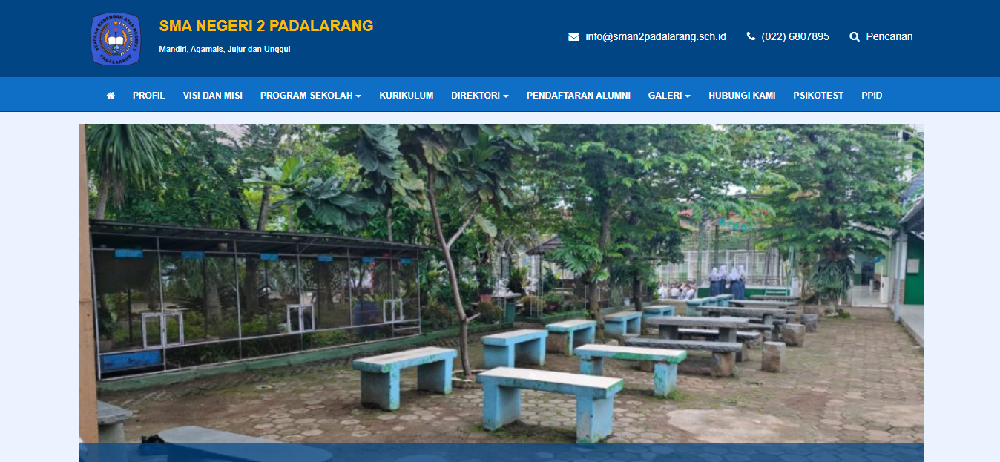
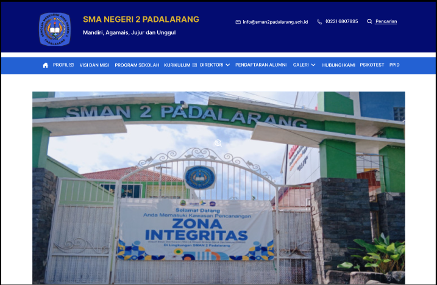
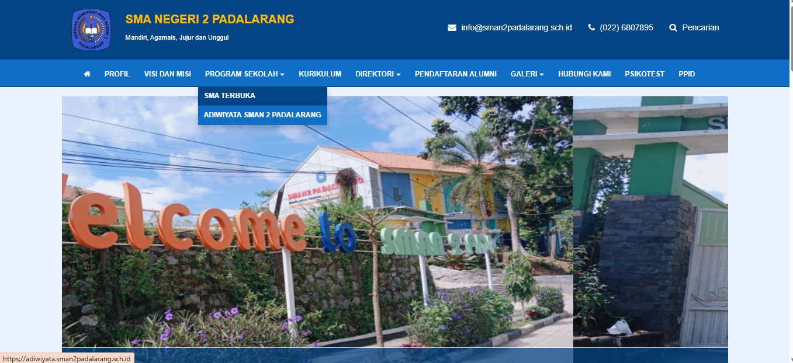
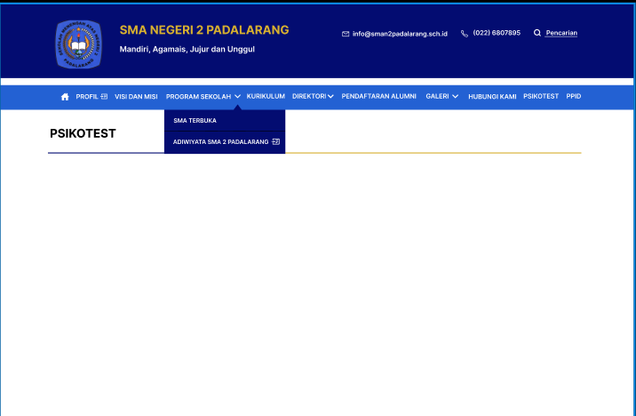

01 / OVERVIEW
Project Overview
Case study ini membahas hasil pengujian kemudahan penggunaan website sekolah. Pengujian mencakup 17 task case yang meminta pengguna menemukan informasi atau mengakses bagian tertentu pada website.
Tujuan evaluasi adalah melihat task mana yang dapat diselesaikan dengan mudah, menemukan titik navigasi yang membingungkan, serta menyusun rekomendasi perbaikan berdasarkan skor yang tersedia.
02 / THE PROBLEM
Masalah yang Ditemukan
Rata-rata keseluruhan adalah 5,4 dari 7, sedikit di bawah benchmark 5,5. Artinya, beberapa bagian website masih membutuhkan perhatian agar informasi lebih mudah ditemukan dan alur navigasi lebih jelas.
Di bawah benchmark 5,5 — status: Perlu Perbaikan.
Solution
Solusi perbaikan difokuskan pada penyederhanaan navigasi dan penataan informasi agar pengguna lebih mudah menemukan konten yang dibutuhkan. Prioritas utama adalah memperjelas akses menuju informasi layanan Psikotest pada TC-16, task dengan skor terendah. Label menu dan pengelompokan informasi pada task berskor 5 juga perlu dievaluasi agar lebih mudah dipahami, sementara pola navigasi pada task berskor 6–7 dapat dijadikan acuan. Perbaikan ini diharapkan membuat alur pencarian informasi lebih jelas dan konsisten.
My Role
UI/UX Designer Student
Timeline
Menemukan konsepnya 4 minggu; membuat prototype dan halaman case study-nya 3 minggu.
Tools
Figma, VS Code, HTML, CSS, JavaScript
04 / PROTOTYPE
Prototype Perbaikan
Yang diperbaiki
Prototype ini memperlihatkan usulan perbaikan navigasi dan penyajian informasi berdasarkan hasil evaluasi usability.
- Memperjelas akses dan jalur navigasi menuju informasi layanan, terutama Psikotest (TC-16).
- Merapikan label serta pengelompokan menu agar informasi lebih mudah ditemukan.
- Menggunakan pola navigasi yang lebih mudah dipahami secara konsisten di halaman lain.
05 / BEFORE & AFTER
Perbandingan Before & After
Perbandingan tampilan website sebelum dan sesudah perbaikan.




06 / CONCLUSION
Kesimpulan
Hasil evaluasi menunjukkan bahwa website memiliki bagian yang sudah cukup mudah digunakan, tetapi nilai rata-rata 5,4 masih berada di bawah benchmark 5,5. Perbaikan sebaiknya dimulai dari TC-16, kemudian dilanjutkan dengan task berskor 5.
Evaluasi ini memberikan arah perbaikan yang terukur: memperjelas label menu, merapikan pengelompokan informasi, dan mempertahankan pola navigasi yang terbukti lebih mudah dipahami.
← Kembali ke Portfolio